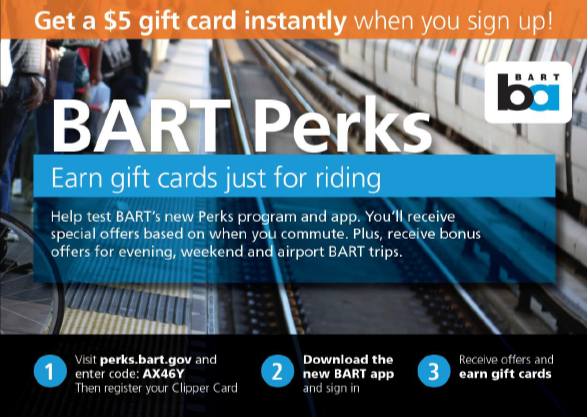
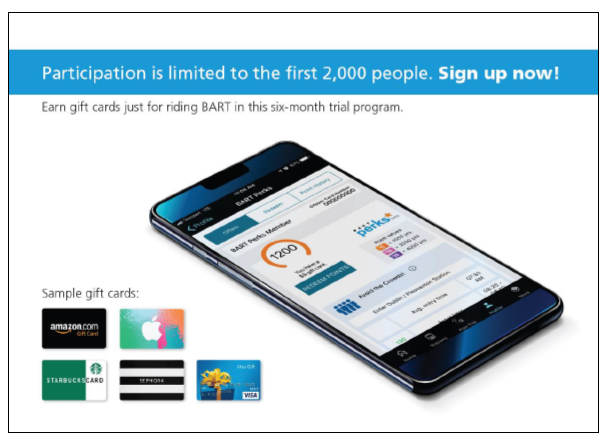
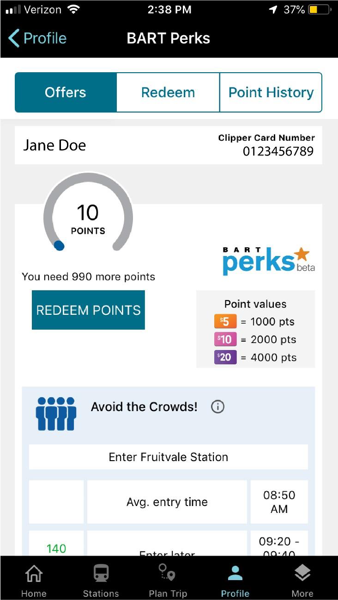
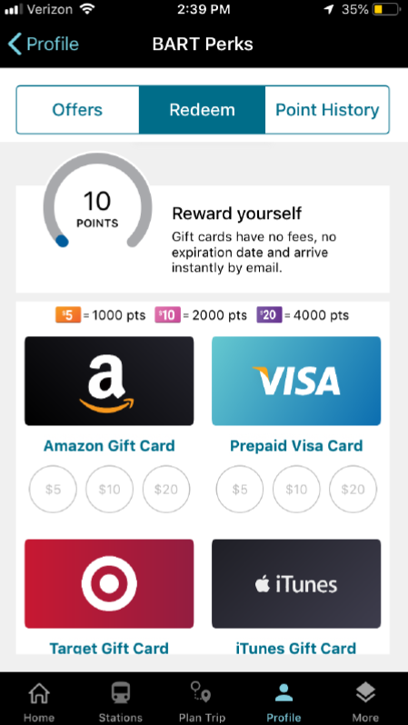
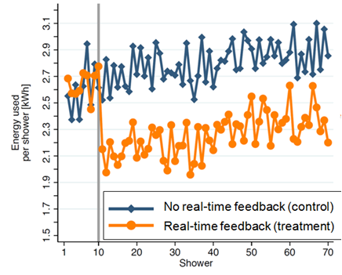

Tools Used
Initiated By
- BART
Partners
- Metropia
- The Behaviouralist
- U.S. Federal Transit Administration
Results
- Shifted travel to earlier, less-congested periods (6% - 13% increases) and to later, less-congested periods (19% - 20% increases)
- More cost-effective than alternative options
Case Study PDF
BART Perks Phase II Evaluation Report
BART Perks 2
BART Perks Phase II used a Smartphone-based platform to incentivize shifts in public transit trips that reduced peak demand. The approach proved cost-effective relative to the average fare associated with each freed-up seat. At full-scale, the approach was predicted to be cost-effective relative to purchasing and maintaining more transit cars. This six-month randomized control study took place in San Francisco during the first half of 2019.
Background
Congestion is a main cause of traveler dissatisfaction for public transit, leading to standing more, less productive use of time, and proximity to other passengers. The San Francisco Bay Area Rapid Transit District (BART) received funding from the U.S. government to encourage ridership development and more efficient capacity utilization.
BART Perks Phase II built on the lessons learned from Perks Phase I, which was completed in 2017. While Perks Phase I offered the same incentives to all participants for the duration of the 35 pilot program, Perks Phase II incentives were customized to the individual participant, and incentive offers were updated at least monthly based on changes in congestion levels and other factors, with the goal of improving program cost-effectiveness through more targeted incentives.
Metropia is the company that developed the incentives software platform, incentives algorithm, and crowding predictive model.
Setting Objectives
The objective was a 5% reduction in the share of travel made during peak and shoulder commute times – 7:00 am to 10:20 am and 4:00 pm to 8:00 pm.
A secondary objective was to encourage travel during times when BART had low ridership or excess capacity (evenings, weekends, and airport trains).
Getting Informed
A literature review uncovered lessons from several previous related projects, including ones in India (named INSTANT), Netherlands (Spitsmijden), Singapore (INSINC) and the USA (CAPRI). The Dutch program found that the key motivator for shifting to off-peak hours was the reward itself, not participants’ awareness of their contributions to decongesting the network. The key barriers to shifting behaviors in response to the incentives were: difficulty of the shift itself, socio-demographic characteristics, work and home related flexibility, and subjective personal motivation.
Phase II also built on the lessons learned from Phase I. In addition, a 10-week pilot study of the Metropia platform in Los Angeles in 2013 had found that 35% of travelers were willing to adjust the times they drove by at least 15 minutes. A one-month experiment with the platform in 2016 had decreased morning rush hour car trips by 13%, shifting travel to other modes and times.
Prioritizing Audiences
The size of the participant group was set at 1,900 regular BART riders, to allow for robust statistical analysis between groups of riders. A ‘regular’ BART rider was defined as one who took at least four one-way trips on BART per week on average over the prior four weeks.
Participants were recruited from prior Perks Phase I participants (1/3) and on select station platforms.
Delivering the Program
BART implemented Bart Perks Phase II between December 2018 and June 2019.
Recruitment
An email invitation was sent to a random subset of Perks Phase 1 participants who (1) opted-in to getting updates on future BART incentives programs, and (2) made at least half their trips from downtown (the most congested) stations. In addition, flyers were distributed one morning at the peak rush period at three of these stations.
Recruitment flyer, front
Recruitment flyer, back
To assess the value of a $5 sign up bonus, half of those who received an email or poster were randomly selected to receive an offer of a $5 sign up bonus. Neither the bonus nor the outreach method had a significant impact on likelihood of enrolment.
However, one significant difference was found between those recruited by email (the Phase 1 participants who had opted-in to getting updates on incentives programs) and those recruited by flyer at the three stations. The former were significantly more likely to shift their behavior, especially in the morning.
Participants first registered using their “Clipper” transit smart cards and then accessed the program via BART’s website and mobile app. They then received limited time offers to earn points by changing their departure times and cashed out their rewards by selecting from a variety of gift cards. (Building Motivation and Engagement Over Time; Incentives; Obtaining a Commitment)
Incentives
The offers were customized for each participant and averaged about $1.00 per trip. They were updated at least monthly based on changes in congestion patterns and other factors, and opportunities to improve program cost-effectiveness through more targeted incentives.
A crowding prediction module estimated the crowding level of station-pair segments based on historical crowding data (train schedules combined with system entries and exits). An incentive generation module used those predictions and each participant’s travel history (frequent entry and exit stations and typical departure times) to calculate optimal departure time shifts. If a less-travelled departure time period was not available within 40 minutes of the typical departure time, no offer was shown. In addition, if the traveller had not taken at least four one-way trips per week on average over the prior four weeks, no offer was shown.

Redemption
Participants redeemed points using the BART website or mobile app. They were then immediately emailed a code for a pre-selected gift card. Users could choose from ten different cards, including pre-paid Visa, Amazon, Target, iTunes, eBay, Starbucks, Walmart, Best Buy, Sephora, or the Tango gift card (redeemable at more than 60 additional retailers such as Google Play, Nordstrom, Pottery Barn, REI, Barnes and Noble, and CVS, and with more than fifteen charities). These options were selected from the most searched for gift cards nationally according to WalletHub.com, screened for flexibility and availability.
Most redeemed incentives went towards the Amazon gift card (57%), followed by the Most redeemed incentives went towards the Amazon gift card (57%), followed by the pre-paid Visa card (12%), Starbucks gift card (11%) and Target gift card (10%).

Financing the Program
The cash budget for BART Perks Phase 2 was US$ 720,000, of which BART provided $220,000 and the FTA grant provided the remainder. BART also provided a 20% match of in-kind staff time on the federal grant. The Phase 2 pilot study report suggested possible sources of funding for a scaled-up program.
Measuring Achievements
The incentive generation module validated if each user took up the offer to shift departure times, by checking the actual gate-in/gate-out data from BART.
Half the participants, randomly selected, did not receive offers to shift their commute times in the first three months of the program (control group), so their behavior could be compared to those that did receive offers. The control group received time-shifting offers during the final three months of the initiative. Both groups were offered incentives for answering survey questions and for using BART during times when the system had low ridership or excess capacity.
Feedback
Individual Feedback and recognition were provided through points and what they could buy.
Results
Impacts – Individual Participants
Perks users accumulated about $23,000 in point value over the course of the program, about $12 per participant, over a six-and-a-half-month period ($1.80 per participant per month). Of that, $7 per participant ($1.10 per participant per month) was for shifting commute times. The remainder was for answering surveys and taking trips during targeted low-use time periods or lines.
Impacts – Overall
Comparing incentivized participants with the control group, participants increased their share of travel during the morning rush by 6% in less congested earlier periods and by 19% in less congested later periods. In the afternoon, the incentives increased the share of participant travel by 13% in less congested earlier periods and by 20% in less congested later periods.
In the morning, the shift to a later period significantly reduced peak congestion (95% confidence level)
Cost-Effectiveness
The average incentive cost was roughly $1 per shifted trip to a less crowded time period, which then freed up a seat during the peak period and made it available to an additional paying passenger. That compared favorably with the $4 per trip average one-way fare for a typical commuter.
The pilot’s final report estimated that a scaled-up version that would reduce crowding by 5% would free up an equivalent of 30 train cars at 1/3 the cost of buying and maintaining those cars ($1.9 million vs $6 million).
Participant Satisfaction
About a thousand participants (over half) responded to a survey in April 2019 to gauge their experience with the program, barriers to shifting commute behavior, and their demographic characteristics. Most participants (about 70%) were satisfied with the program, and satisfaction was strongly related to the amount of rewards received.
Contacts
Ryan Greene-Roesel
Parking Program Manager
Bay Area Rapid Transit, Oakland, CA
greene@bart.gov
Chris Colemon
Director of Marketing, Metropia
Chris.colemon@metropia.com
Notes
Lessons Learned
Top areas of feedback on the April 2019 survey included requests for the following.
- More ways to earn points
- Improved notification of new offers using in-app push notifications
- Different types of rewards besides gift cards, and especially Clipper value
- A desire to be rewarded on an ongoing basis for riding BART, rather than just receiving limited time offers
Survey participants were also asked about their barriers to shifting their commute times. The top reason for not being able to shift earlier was personal preference. The top reasons for not being able to shift later were personal preference and “employer would not allow it”.
Regarding demographic characteristics, the survey showed that the following groups were underrepresented compared to all BART riders.
- Those identifying as non-white and non-Asian
- Low-income households
- Non-English language speakers
- Those without a Smartphone
As expected, based on the recruitment approach, Perks participants reflected the demographic makeup of BART ridership to downtown San Francisco, which tended to be more affluent than BART’s overall ridership
Other Notes
- This study appears to be the first attempt to manage public transit travel demand by offering riders personalized incentives along with individualized alternate departure time options to opted-in riders for an extended period.
- Throughout April, participants only received offers to shift their morning commutes. The data for this month were compared with the data for other months and no clear evidence was found to suggest that people who shifted their morning commute times were any more or less likely to change their afternoon commute times.
The following information from other Metropia pilots illustrates how a similar approach can be used with other modes of travel.
- Surveys during field tests in 2016 found that up to 30% of drivers had sufficiently flexible schedules to change their commuting options. A one-month experiment in 2016 decreased morning rush hour car trips by 13%, shifting travel to other modes and times.
- Research and planning of the platform’s carpool functionality uncovered several essential requirements: the feature had to be easy to use and functional in many different applications; both passenger and driver needed an incentive to carpool; and enhanced engagement opportunities had to be provided when using smaller rewards.